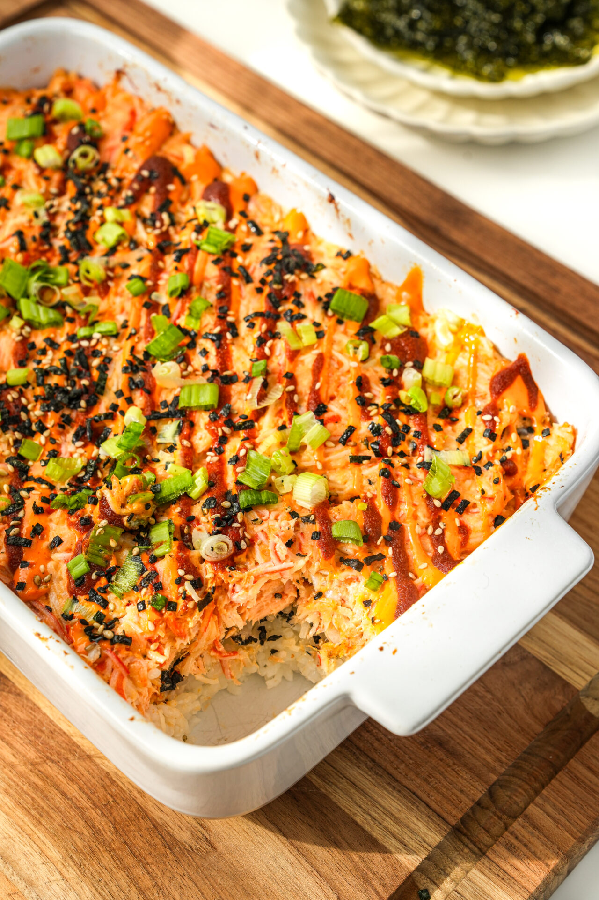

Sushi Bake
Home

Description
Sushi bake is a casserole-style dish that uses the similar ingredients to sushi. A sushi bake typically consists of layers of seasoned sushi
rice, a creamy seafood mixture, and a variety of toppings. It pairs well with nori (dried seaweed) or just to eat by itself.
Ingredients
Sushi Rice
- 1 cup freshly cooked rice
- 1 1/2 tablespoon rice vinegar
- 1/2 tablespoon sugar
- 1/2 tablespoon salt
Sushi Filling
- 2 tablespoons cream cheese (softened)
- 2 tablespoons ponzu
- 3 table spoons Japanese mayo
- 1 tablespoon light soy sauce
- 3 teaspoons sesame oil
- 10 oz imitation crab meat (shredded & copped into bit-size pieces)
- 4 green onions (thinly sliced)
Toppings
- 1/4 cup furikake
- 3 teaspoons unagi sauce
- 3 teaspoons Sriracha
- 3 teaspoons Japanese Mayo
Steps
- Pre-heat oven to 450° F.
- In a microwave-safe bowl, combine rice vinegar, sugar, & salt. Microwave for 15 seconds or until the sugar is dissolved.
- Place the hot freshly cooked rice in a large bowl, then drizzle the rice vinegar mixture on top. Gently mix well then set aside.
- In a large bowl, combine the sushi filling ingredients. Set aside.
- In an 8-inch x 8-inch baking dish, begin assembling the sushi bake by evenly layering the ingredients, starting with the sushi rice, then half of the furikake, the sushi filling, the remaining furikake, unagi sauce, Sriracha, and Japanese mayo.
- Bake in the oven for 10 – 15 minutes, or until the top is golden.
- Serve with nori sheets, cucumber, and avocado slices if desired. Enjoy by scooping the sushi bake onto a piece of nori and adding cucumber and / or avocado, if desired. Roll up into a bite & enjoy!